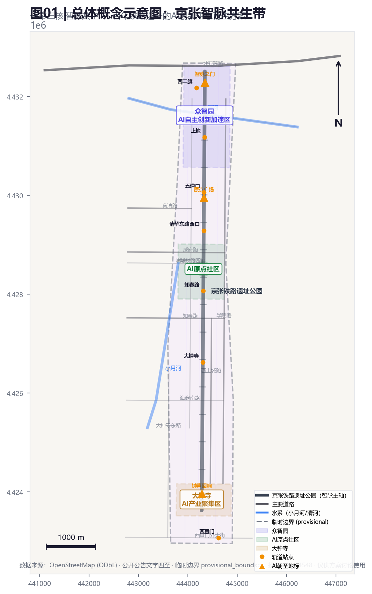
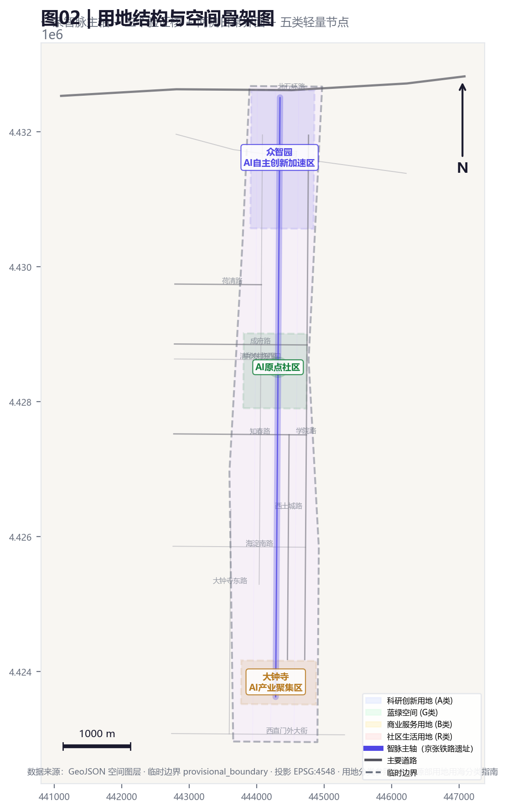
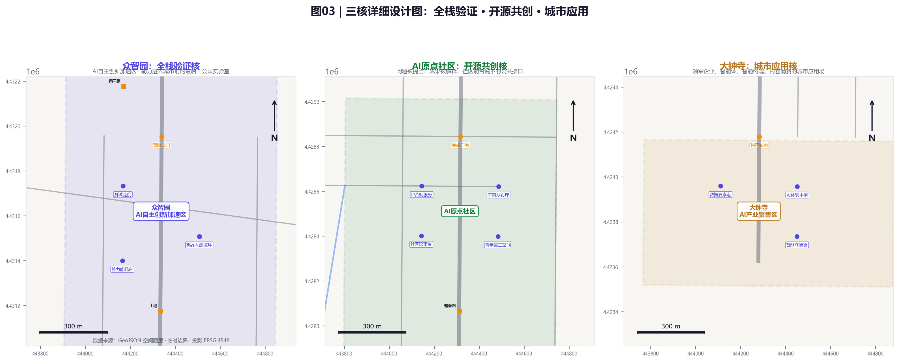
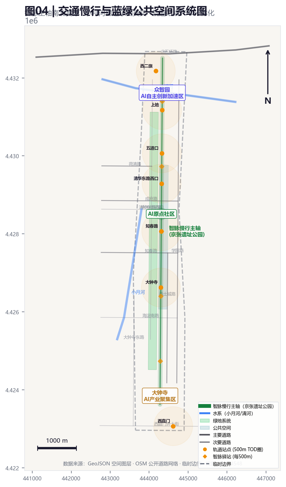
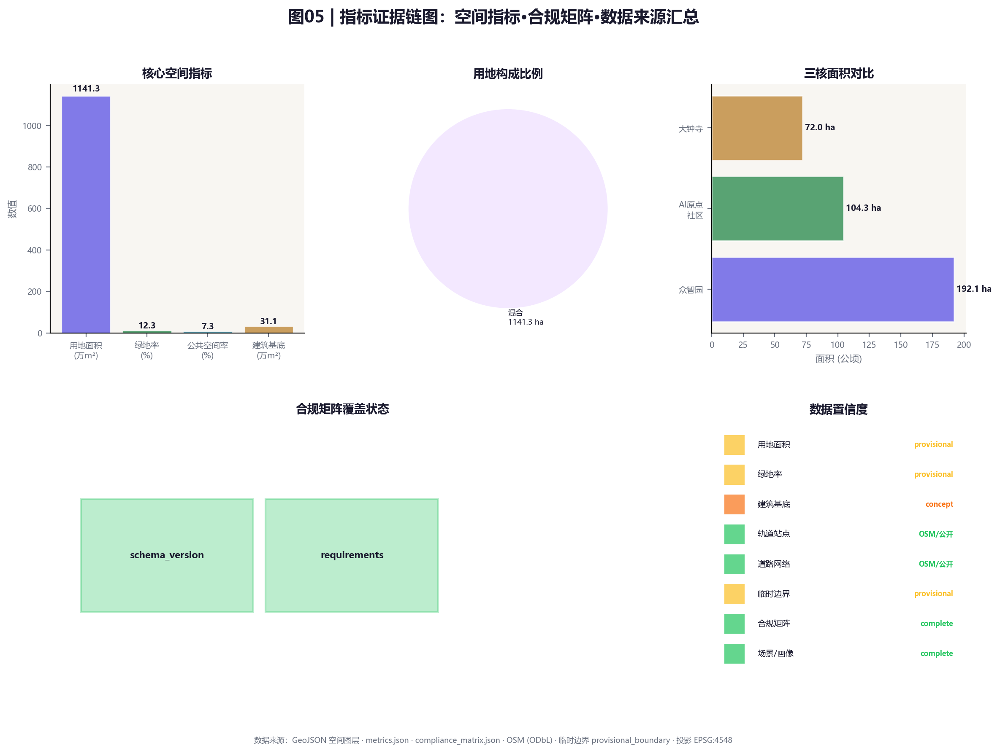

面向开发者、企业和高校的成果发布与模型评测节点。
图01 | 总体概念示意图
一带三核·智脉共生。以京张铁路遗址公园为智脉主轴，串联众智园、AI原点社区、大钟寺三个验证核，叠加真实道路网络、水系和轨道站点。包含比例尺、指北针、图例和来源标注。

图01 | 投影 EPSG:4548 · 数据来源：OSM (ODbL) · 临时边界 provisional_boundary
图02 | 用地结构与空间骨架图
一条智脉主轴 + 三个验证核 + 两侧日常界面 + 五类轻量节点。用地按科研(A类)、蓝绿(G类)、商业服务(B类)、社区生活(R类)分区，临时边界以虚线标注。

图02 | 用地分类参照自然资源部用地用海分类指南 · 投影 EPSG:4548
图03 | 三核详细设计图
众智园全栈验证核、AI原点社区开源共创核、大钟寺城市应用核。每核展示重点设计要素、轨道站点和空间策略。

图03 | 三核各含设计要素标注、轨道站点和重点文化地标 · 投影 EPSG:4548
图04 | 交通慢行与蓝绿公共空间系统图
智脉主轴南北贯穿，小月河廊道东西交叉。轨道站点500m TOD圈覆盖，智脉驿站每500m设置。蓝绿系统和公共空间叠加道路网络。

图04 | 数据来源：GeoJSON · OSM 公开道路网络 (ODbL) · 投影 EPSG:4548
图05 | 指标证据链图
核心空间指标、用地构成比例、三核面积对比、合规矩阵覆盖状态和数据置信度汇总。

图05 | 数据来源：metrics.json · compliance_matrix.json · 投影 EPSG:4548
核心指标
指标必须与 metrics.json 一致，展示数据来源和置信度。
site_area_sqm11412825.386
green_ratio0.123423
public_space_ratio0.073281
AI 场景
10个AI场景卡，每个场景说明服务对象、空间位置、数据来源、隐私边界和运营机制。
在可控公共空间测试交通、服务和运维智能体。
用公开数据和人工复核识别遗址公园慢行断点。
连接居住、学习、消费、运动和社交服务。
展示标准制定、可信评测和安全治理能力。
支撑清华、北大、中科院成果转化会客与路演。
大钟寺片区的数据资产、智能终端和内容消费展示。
解释分布式能源、端侧算力与公共服务设施融合。
把铁路文脉、中关村创新文化和AI新文化串联。
组织开发者节、场景开放日、竞赛路演和城市体验路线。
来源与假设
所有数据来源、假设和限制条件必须透明可追溯。
来源
来源见 sources.json、agent_taskbook.json 和 standards。本页不加载 CDN、远程地图瓦片、外部脚本、外部字体、API 请求或 iframe。图纸基于 GeoJSON 空间数据和公开道路网络（OSM ODbL）生成。
sources.json / standard_matrix.json / design_depth_matrix.json / OSM (ODbL)
假设
待补控规、道路红线、权属、市政、文保和工程条件必须在 assumptions.json 中列明。临时边界(official_boundary=false)只用于方案生成和自检，不能作为官方红线或审批依据。
assumptions.json / self_check.json / provisional_boundaries.geojson